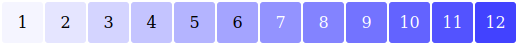
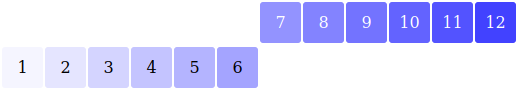
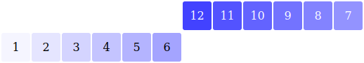
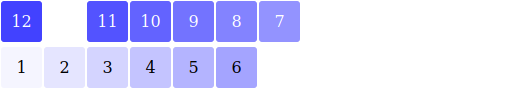
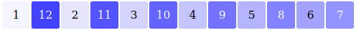

Le but du jeu est de remettre les nombres dans le bon ordre en utilisant les touches I et M, après les avoir mélangés.
I inverse l'ordre des nombres. Ce que fait M est plus compliqué : les nombres sont divisés en deux moitiés, la moitié de droite est inversée, puis les moitiés sont insérées l'une dans l'autre en intercalant les nombres, comme quand on mélange un paquet de cartes.
En images, cela donne :




